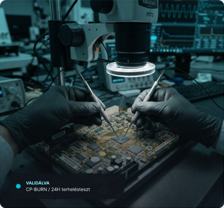

01
Tervezés
Szimuláció, prototípus és termikus optimalizálás a valós terhelésekhez.
A CorePulse zárt gyártási lánca minden komponens útját dokumentálja az első rajztól a kiszállításig.
Szimuláció, prototípus és termikus optimalizálás a valós terhelésekhez.
Nyomon követhető anyagok és mikronpontosságú automatizált megmunkálás.
Kontrollált gyártócella, dokumentált paraméterek és teljes folyamatfelügyelet.
Optikai vizsgálat, 24 órás burn-in teszt és egyedi sorozatszám-validáció.
Minden CorePulse komponens többlépcsős ellenőrzésen megy át. Nem mintavétellel bizonyítunk: az egyedi terméket validáljuk.
